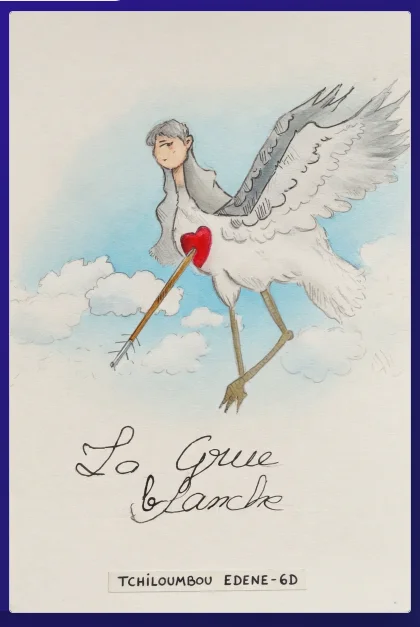

Conte traditionnel japonais revisité en flip book animé réalisé avec HTML, CSS et JavaScript sur Visual Studio.

Conte traditionnel japonais revisité en flip book animé réalisé avec HTML, CSS et JavaScript sur Visual Studio.

Une histoire touchante de gratitude et de mystère, à découvrir page par page dans le navigateur.

Ce livre audio est réécrit par T.EDENE dans le cadre d'un devoir de à la maison.